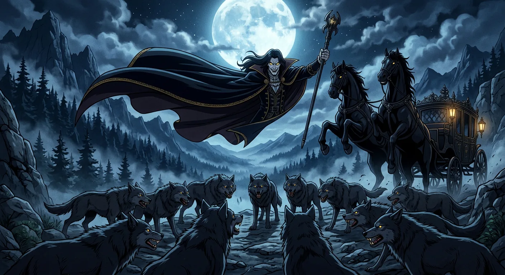
Eastward Into the Land of Superstition
Jonathan Harker is a young man traveling far from home. He is going to a big castle in a faraway land. His trip takes many days by train and coach. Along the way, he sees beautiful mountains and green forests. He tries yummy new foods and thinks about his sweetheart Mina back home.
When Jonathan stops at a little hotel, the kind people there seem worried about him. An old woman gives him a special necklace to keep him safe. She asks him to please stay, but Jonathan has made a promise to visit the Count. He must keep going. On the bumpy coach ride through the mountains, the other passengers look nervous. They give Jonathan little gifts and wave goodbye. Then a strange tall man in a dark carriage comes to take Jonathan the rest of the way. The horses gallop through the night under the bright moon. At last, they arrive at a huge old castle high on a hill. Jonathan feels a little scared but also very curious about what he will find inside.
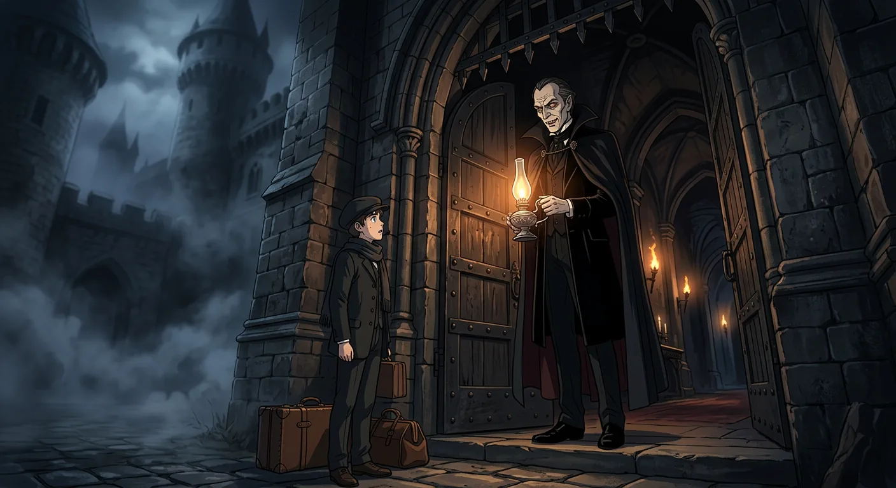
Threshold of the Castle's Master
Jonathan fell asleep during the long carriage ride. When he woke up, he was standing in front of a huge, old castle. The courtyard was very big and dark. The driver who brought him there disappeared before Jonathan could even say thank you. Jonathan stood alone in the quiet night, feeling a little nervous. He thought about his sweetheart Mina back home and wished he could see her.
Then he heard footsteps behind the heavy door. Chains rattled and locks clicked open. A tall old man dressed all in black stood there holding a glowing lamp. This was Count Dracula. He smiled and welcomed Jonathan inside with a very strong handshake. The Count carried Jonathan's bags up winding stairs to a cozy room with a warm fire and yummy food waiting. The Count was very polite, but something about him made Jonathan feel a little uneasy. Outside, wolves howled in the mountains. The Count smiled and called them the children of the night. Over the next few days, they talked about a house the Count wanted to buy in England. Jonathan noticed some odd things about the castle and wondered what adventures awaited him there.
The rest is waiting.
58 illustrated classics. Cinematic, anime, and kids editions. $4.99 a month — about the price of a coffee.
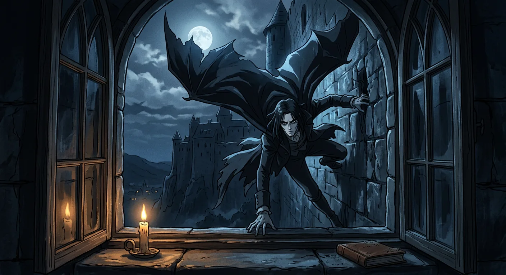
Prisoner in the Castle of Shadows
Jonathan now knows the truth. He is trapped in the castle. At first he ran from door to door and window to window, looking for a way out. But every door was locked tight. So he took a deep breath and decided to stay calm. He would watch and wait and pretend everything was fine.
Jonathan noticed something strange. The Count does all the work himself. He makes the beds and sets the table. There are no helpers anywhere. This meant the Count must have driven the coach through the dark forest all alone. How very odd and scary that seemed. Jonathan held tight to the little cross the kind villagers gave him. It made him feel a bit safer.
One night, Jonathan saw something he could not believe. The Count climbed out a window and crawled down the castle wall like a lizard. His cape spread out like wings. No person could do that. Jonathan felt a shiver. What kind of creature was the Count? He did not know, but he knew he must be very, very careful.
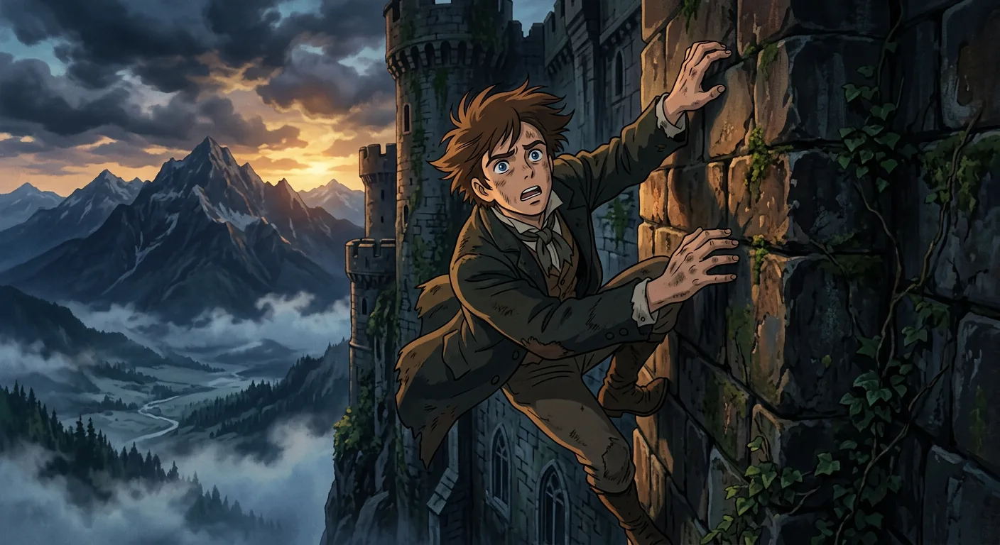
The Span of My Life
Jonathan woke up in his own bed feeling very confused. He did not remember how he got there. Someone had folded his clothes in a strange way. He thought the Count must have carried him back to his room. Jonathan felt scared because he had met three very strange and frightening women in the castle. He was so glad to be safe in his own room again.
Jonathan tried to send letters home to his friends and to Mina, the person he loved most. He asked some travelers to help mail them. But the Count found the letters and took them away. This made Jonathan feel very sad and lonely. He missed Mina so much and wanted to go home. The castle felt like a trap, and Jonathan knew he had to find a way out. He decided to be very brave and try to climb down the tall castle wall. He hoped with all his heart that he would see Mina and his friends again soon.
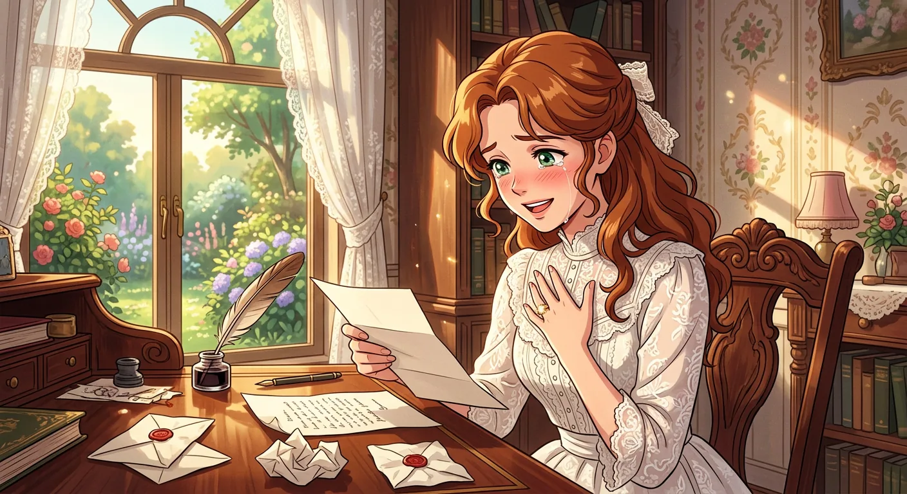
Letters of Love and Longing
Mina writes a letter to her best friend Lucy. They are as close as sisters. Mina has been very busy learning new skills. She wants to help her sweetheart Jonathan with his work someday. Jonathan is far away on a trip, and Mina misses him.
Lucy writes back with exciting news. She is in love with a man named Arthur. But something funny happened to her. Three different men asked to marry her all in one day! The first was a kind doctor named John. The second was a friendly American named Quincey who told amazing adventure stories. Lucy liked them both very much, but her heart belonged to Arthur. She said no to John and Quincey in the gentlest way she could. Then Arthur came to visit, and they decided to get married. Lucy felt so happy she could burst. John and Quincey were sad, but they stayed good friends with Arthur. The three men even planned to celebrate together.
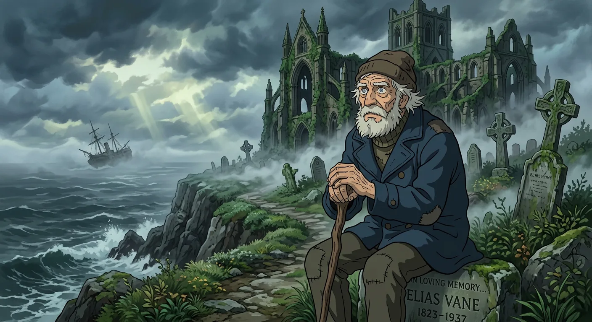
Whitby's Ruins, Legends, and Old Sailors
Mina travels to a pretty seaside town called Whitby to visit her best friend Lucy. The town has red roofs and an old stone abbey on a hill. Mina loves to write in her journal about everything she sees. In the churchyard, she meets a very old sailor named Swales who tells funny stories about the sea. He likes to joke about the old gravestones and the sailors who went on long adventures. But one foggy day, Swales feels different. He is quiet and gentle, and he looks out at the grey sea like he is waiting for something. Mina starts to worry because she has not heard from her friend Jonathan in a long time. Lucy has been walking in her sleep again, wandering through the house at night. And far out on the stormy water, a strange ship is sailing toward the town, rocking back and forth in the waves.
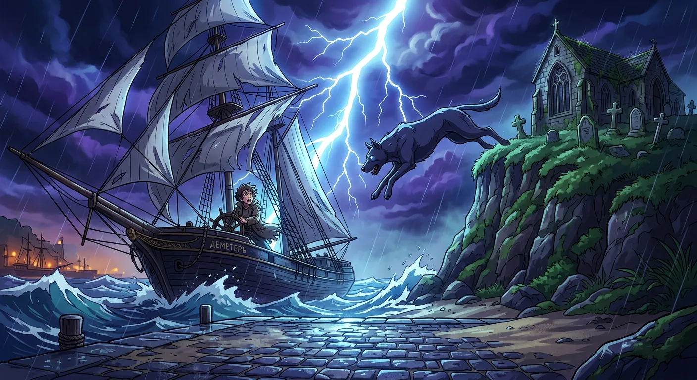
The Storm-Tossed Ship at Whitby
One summer evening in Whitby, the sky was pink and beautiful. But old sailors looked at the clouds and said a big storm was coming. They were right! By midnight, the wind howled and huge waves crashed against the shore. Through the rain and lightning, people spotted a ship racing toward the harbour. Everyone thought it would crash, but somehow it slipped through safely and landed on the sandy beach.
A big dog jumped off the ship and ran away into the night. No one ever saw it again. The ship was called the Demeter, and it had come from far away. It carried many large wooden boxes filled with dirt. Mina wrote about the exciting night in her journal. She was a little worried about her dear friend Lucy, who had been feeling restless and could not sleep well. Strange things were happening in their quiet seaside town, and Mina wondered what would come next.
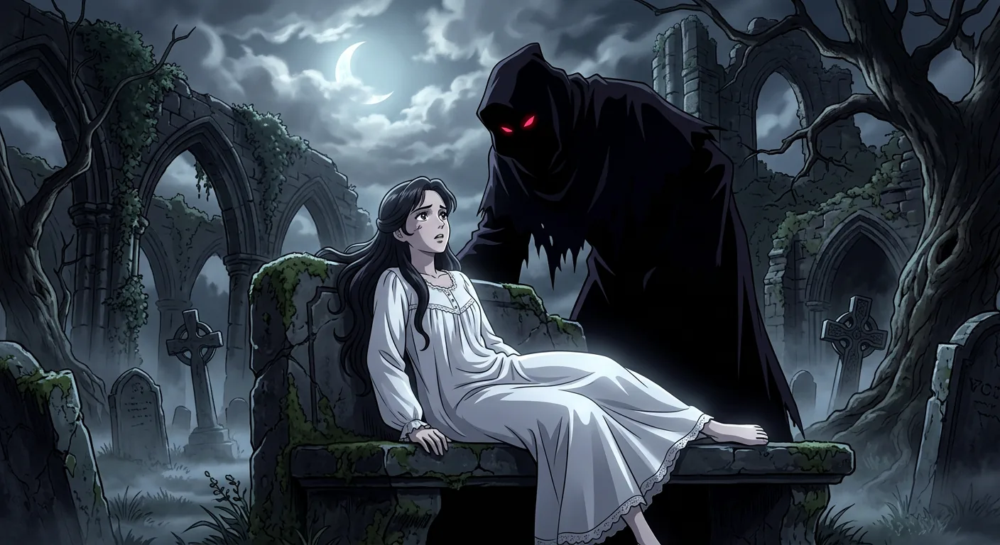
Moonlit Search for the Sleepwalker
Mina and her best friend Lucy were staying in a pretty seaside town called Whitby. They had lovely days together, walking by the lighthouse and having tea at a cozy little inn by the sea. Lucy had been having strange dreams, but she seemed to be feeling much better, and that made Mina so happy.
One night, Mina woke up and found Lucy's bed empty. She hurried outside in the moonlight to look for her friend. She ran across the bridge and up the long stone steps to the old churchyard where they liked to sit together. There was Lucy, lying on their favorite bench in the silvery light. Mina wrapped her up in a warm shawl and gently walked her home. Lucy had been sleepwalking again. In the morning, Lucy seemed fine, though Mina noticed two tiny marks on her neck. As the days went by, Lucy kept sleepwalking toward the window at night, and she started looking pale and tired. Mina worried about her dear friend. Then wonderful news came in a letter—Mina's sweetheart Jonathan had been very sick far away, but he was getting better. Mina would travel to see him soon, her heart full of hope.
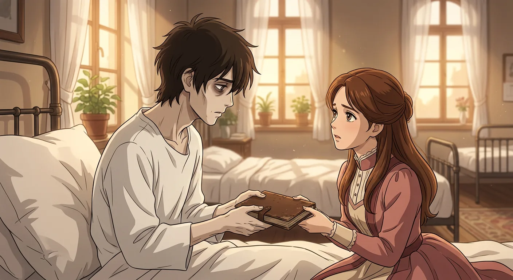
Vows at the Bedside
Mina traveled a long way to see Jonathan in a hospital. He was very sick and weak, not like himself at all. Mina was so worried about him, but she loved him very much. A kind nurse had taken good care of him while he was ill. Jonathan gave Mina a special notebook and asked her to keep it safe. That very same day, they got married right there in the hospital room. Mina wrapped the notebook in pretty paper and ribbon to show how much she trusted him.
Back home, their friend Lucy seemed happy at first. She went on walks and felt well. But soon Lucy started feeling tired and had bad dreams she could not remember. She felt weaker and weaker. Her friends called a doctor to help her. The doctor was puzzled, so he asked a wise teacher named Van Helsing to come look at Lucy. Van Helsing said this was very serious. Everyone hoped Lucy would get better soon, but they were all very worried about her.
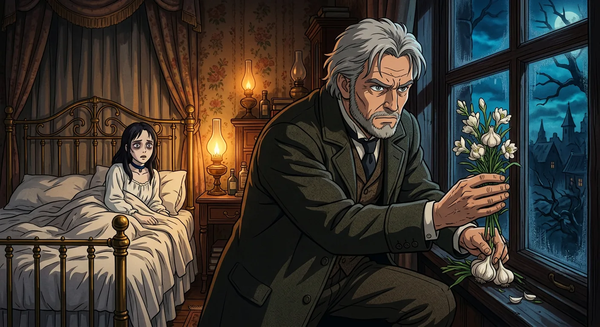
The Husbandman's Patience
Doctor Seward is very worried about his friend Lucy. She has become very sick and pale. He asks a wise old professor named Van Helsing to come and help her. Van Helsing travels a long way to see Lucy, and when he arrives, he looks very serious.
Lucy is so weak that she needs help right away. Her sweetheart Arthur comes to visit, and he helps make her feel better. Some colour comes back to her cheeks, and everyone feels hopeful. But Van Helsing notices something strange on Lucy's neck—two tiny red marks. He does not explain what they mean. Instead, he goes home to read his special books.
Lucy starts to feel better, but then she gets sick again. Van Helsing brings sweet-smelling flowers called garlic and puts them all around her room and near her bed. He says the flowers will keep her safe while she sleeps. Seward thinks this is very odd, but he trusts his old teacher. As night falls, Seward hopes the garlic flowers will protect Lucy, but he still feels worried about what might happen next.
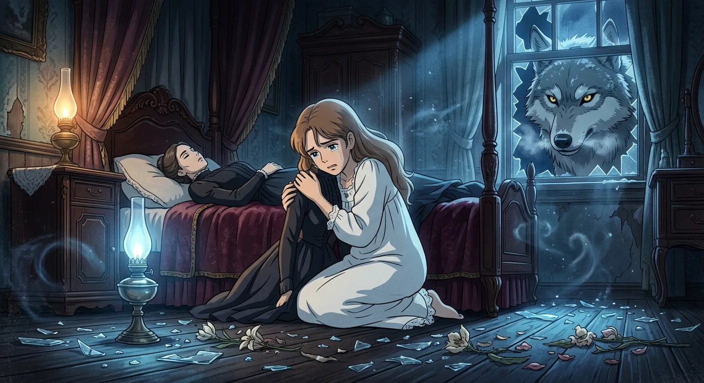
Garlic Removed, Darkness Returns
Lucy writes in her diary that kind Doctor Van Helsing gave her special flowers to keep near her bed. The flowers smell very strong, but Lucy likes them now. They help her feel safe and sleep well at night.
But something sad happens the next day. Lucy's mother wanted to help, so she took the flowers away and opened the window. She did not know the flowers were keeping Lucy safe. When Van Helsing finds out, he feels very upset. Poor Lucy is sick again, and the doctor must work hard to help her feel better.
A few days later, something strange happens at the zoo. A big grey wolf named Bersicker gets out of his cage. A tall man with red eyes had visited the wolf that very day. No one knows why the wolf ran away or where it went.
That night, Lucy has a very scary time. Her window breaks, and her mother gets so frightened that she becomes very ill. Lucy feels alone and afraid, but she is brave and writes a letter to the people she loves.
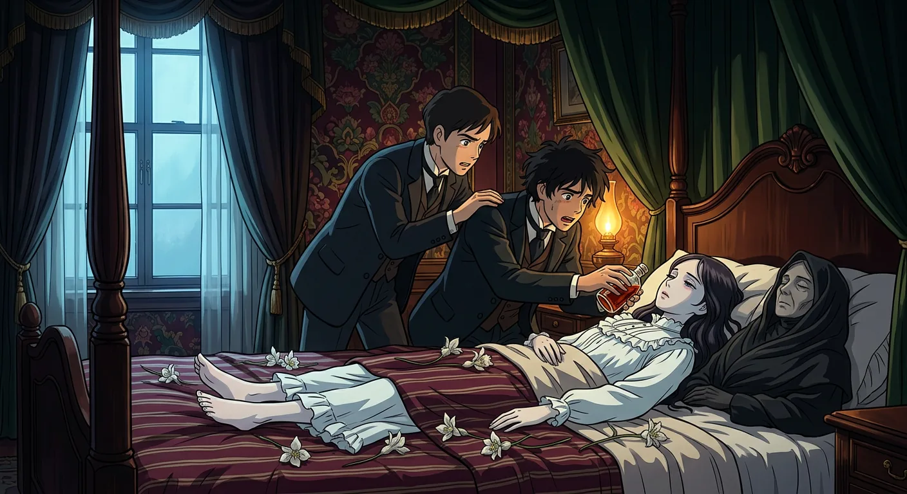
A House of Death and Desperate Hope
On a gray September morning, Dr. Seward went to visit Lucy at her big house called Hillingham. Something felt very wrong. No one answered when he knocked on the door. His friend Van Helsing came too, and they had to climb through a window to get inside. They found the helpers sleeping very deeply because someone had given them medicine to make them sleep. Upstairs, they found Lucy looking very pale and sick in her bed. Her mother had passed away quietly beside her.
Lucy was still alive, but she needed help right away. A brave friend named Quincey came just in time and gave some of his blood to help her feel stronger. Arthur, who loved Lucy very much, came to sit beside her and hold her hand. Lucy smiled at her friends and thanked them for being so kind to her. She asked them to take care of each other. Then Lucy closed her eyes and fell into a peaceful, forever sleep. Her friends were very sad, but they stayed together and promised to be brave.
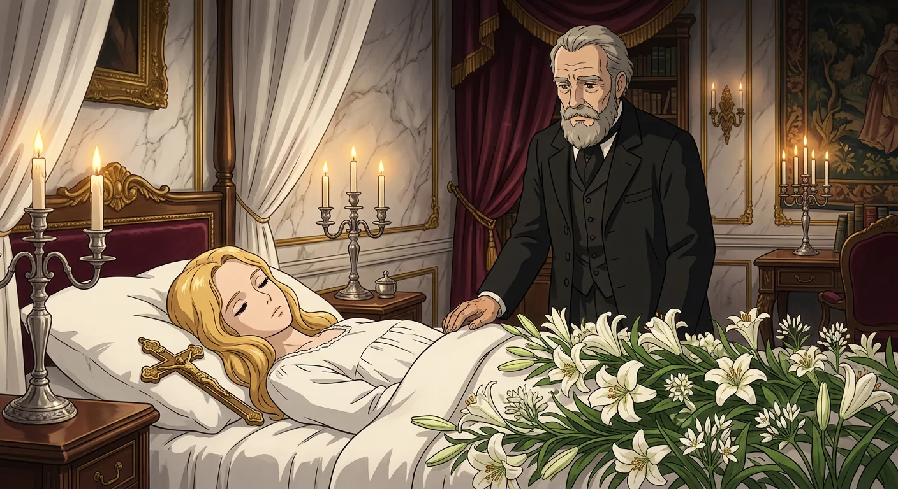
Death's Beauty and Dark Preparations
Lucy had passed away, and her friends were very sad. They dressed her in beautiful white clothes and put soft white flowers all around her. Van Helsing, the kind old doctor, stayed close by the whole time. He looked through Lucy's letters and diary to keep them safe for her dear friend Arthur.
When Van Helsing visited Lucy, he placed special flowers near her and a pretty gold necklace to watch over her. He wanted to do something important, but someone took the necklace by mistake, so he had to wait. Arthur came to say goodbye to Lucy. He thought she looked peaceful and lovely, like she was only sleeping. He was very sad but trusted Van Helsing to help however he could.
Far away in London, Mina and Jonathan were also feeling sorrowful. Jonathan saw someone on the street who frightened him very much. Mina held his hand and decided she would help him feel brave again.
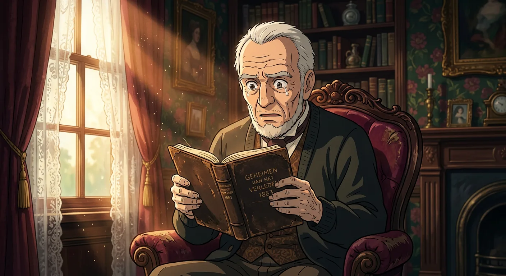
Threads of Truth Begin to Weave
The days after Jonathan comes home feel cozy but also a little worried. Mina loves being married, but she read Jonathan's travel journal and it told of very strange, scary things. She wonders if Jonathan just had bad dreams from being sick, or if something real and spooky happened far away. Jonathan keeps busy with work, which helps him feel better. But Mina saw him get very upset when he spotted a stranger in London. She decides to type up their journals, just in case someone needs to read them later.
Then a letter arrives from a kind professor named Van Helsing. He knew their dear friend Lucy, who got sick and passed away. He asks to visit Mina because he has important questions. When he reads Jonathan's journal, something wonderful happens. Van Helsing tells Mina that Jonathan was telling the truth all along. Jonathan feels so much braver after hearing this. The professor leaves with their papers, ready to learn more about the mystery they are all trying to solve together.
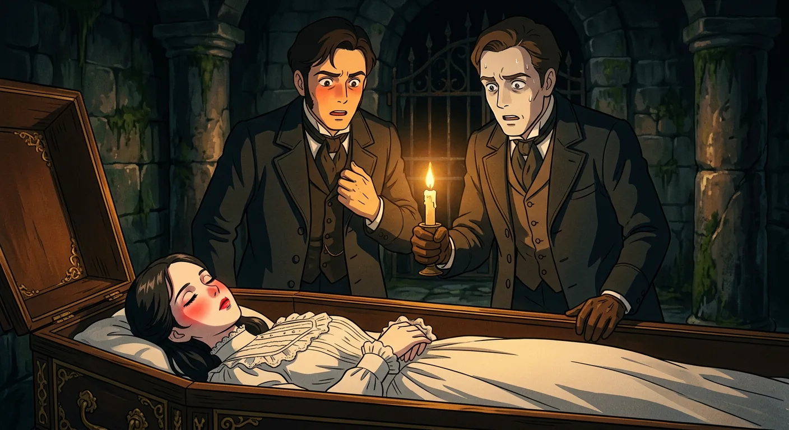
The Bloofer Lady Revealed
Doctor Seward was very upset with his friend Van Helsing. He did not want to believe the strange things Van Helsing was saying about Lucy. But Van Helsing spoke gently and asked him to come see something important. They visited a hospital where a child was resting safely. The child had tiny marks on their neck, just like Lucy once had. Van Helsing said the child needed to stay inside where it was safe.
That night, the two friends went to the quiet churchyard where Lucy was supposed to be resting. But when they looked inside her special resting place, it was empty! Seward was very confused. Later, they found a little lost child wandering in the dark and made sure a kind policeman would find them. The next day, they came back and found Lucy there after all. She looked different now, like she was under a strange spell. Van Helsing said they needed to help free her, but first their friend Arthur had to come and see for himself.
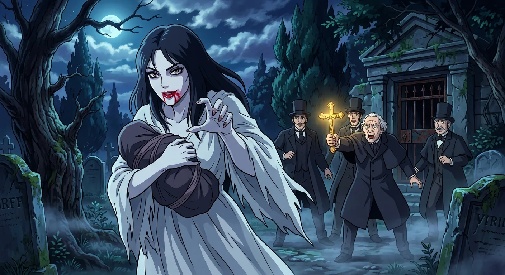
The Empty Coffin's Vigil
It was almost midnight when Van Helsing and his friends climbed over the low wall into the old churchyard. The moon peeked out between clouds as they walked together toward Lucy's resting place. Van Helsing led the way inside the quiet stone building. He asked everyone to look at the coffin where Lucy had been sleeping. But when they opened it, Lucy was not there! The coffin was empty.
The friends waited outside among the tall dark trees. Then they saw a white figure coming toward them in the moonlight. It was Lucy, but she looked different and unwell. Van Helsing knew just what to do. He held up a special golden cross, and Lucy went back inside to rest. The next day, Van Helsing and his friends came back. They said goodbye to Lucy with love in their hearts. Now her spirit could be at peace. Afterward, the sun was shining and birds were singing. The friends felt a little bit of hope again. But Van Helsing told them they still had more important work to do together.
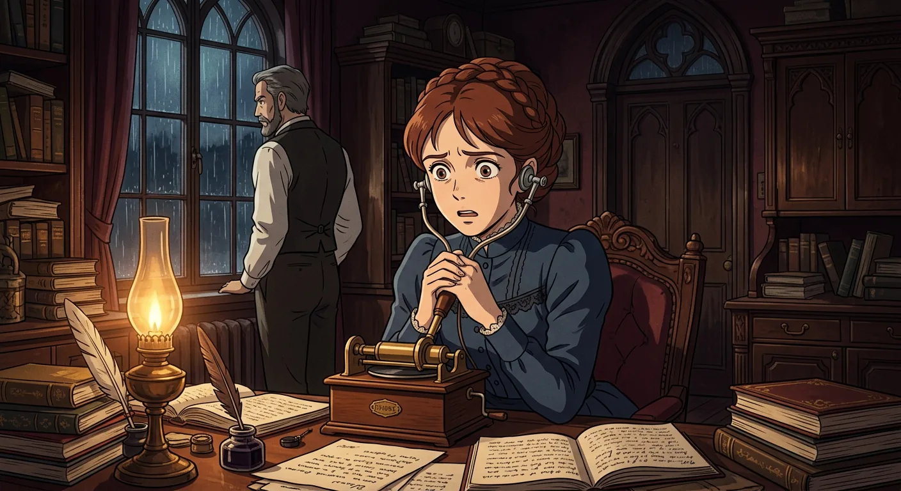
Diaries, Phonographs, and Shared Secrets
Professor Van Helsing sent a message saying Mina Harker was coming by train. He asked Doctor Seward to meet her and bring her to stay at his big house. Before leaving, Van Helsing gave Seward some special papers to read. They were diaries written by Mina and her husband Jonathan about strange and important things.
Seward met Mina at the train station. She was kind and friendly, and they both felt sad because they missed their dear friend Lucy. Mina brought a typewriter with her, which would help them a lot. She offered to type up Seward's voice recordings if he would share the papers with her. They decided to trust each other and share their stories. Jonathan came back with news about some mysterious boxes that had arrived at an old building nearby. Mina typed copies of everything and put them in order. Two friends named Arthur and Quincey came to help too. Everyone felt better working together, and they waited for Van Helsing to return so they could make a plan.
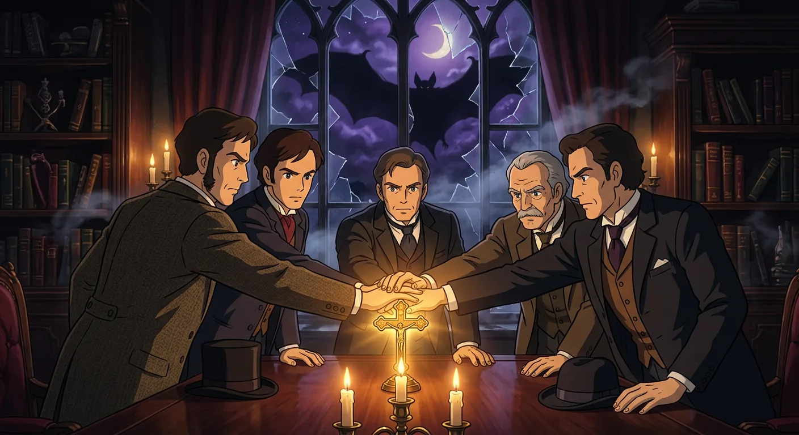
Renfield's Unexpected Lucidity
At Doctor Seward's old house, something wonderful happened. Mina Harker had made the place feel like a real home. She was very clever and had put together everyone's diaries and letters so they could all understand the story better. Everyone read these papers carefully because they had important work to do.
Mina asked to meet a patient named Renfield. He was usually quite confused, but something surprising happened. When Mina visited him, he spoke very politely and clearly, like a wise teacher. But as she left, he said something strange and sad. He hoped he would never see her kind face again.
Later that evening, Professor Van Helsing arrived. The friends all held hands and made a promise to help each other. They were a team now. Before they left on their adventure, Renfield begged them to let him go free. He seemed frightened about something he could not explain. The friends wondered what secret he was keeping.
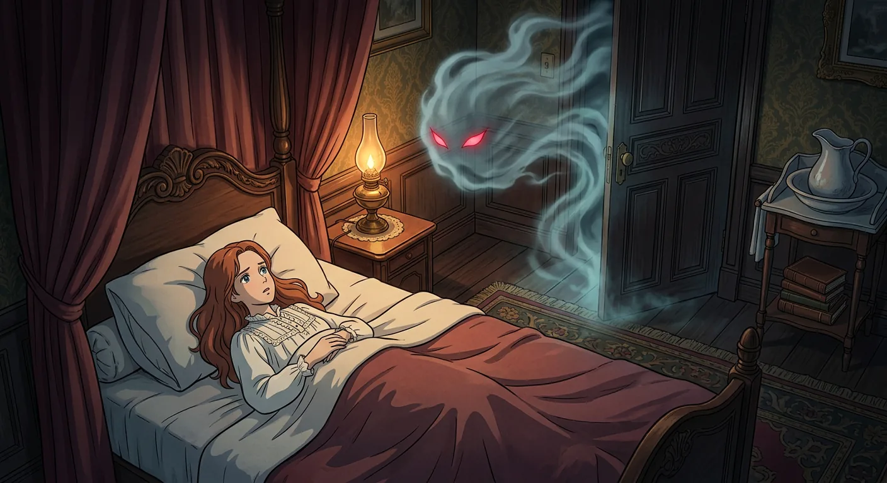
The Hunt Begins at Carfax
Jonathan and his friends went to search a spooky old house called Carfax. Mina stayed home to rest because she had been feeling tired. Before they left, Professor Van Helsing gave everyone special things to keep them safe, like silver crosses and little lights to see in the dark.
The old house was very dusty and smelled bad inside. It felt like something creepy was watching them, which made everyone a little nervous. They were looking for some wooden boxes, but many of them were already gone. Then lots and lots of rats came running out! Luckily, Lord Godalming had brought three brave little dogs who chased all the rats away.
The friends came home when the sun was coming up. Jonathan found Mina sleeping, but she looked very pale. When she woke up, she seemed scared, like she had a bad dream about fog and strange red lights. Jonathan worried about her and hoped she would feel better soon.
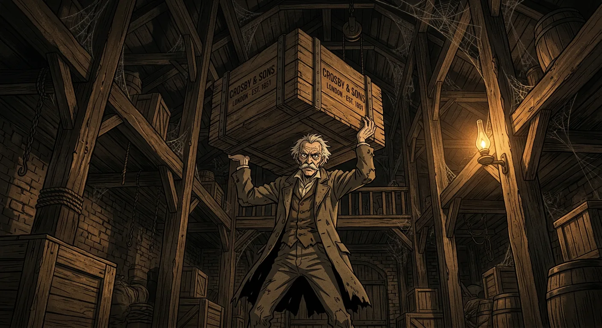
The Hunt for Dracula's London Lairs
Jonathan had an important job to do. He needed to find all the hiding places where the Count had sent his special boxes around London. First, he met a man named Smollet who helped him very much. Smollet had a little notebook with all the answers inside. He told Jonathan that boxes had been taken to different parts of the city. Then Jonathan found another helper named Sam Bloxam. Sam told him about a dusty old house near a white church where more boxes had gone. Jonathan worked very hard to follow all the clues, like a detective solving a mystery.
Back at home, Mina was feeling tired and not sleeping well. Her friends worried about her and wanted to help. The wise old doctor named Van Helsing said everyone was doing good work finding the hiding places. There was still more to figure out, but the friends felt hopeful as they talked together that evening.
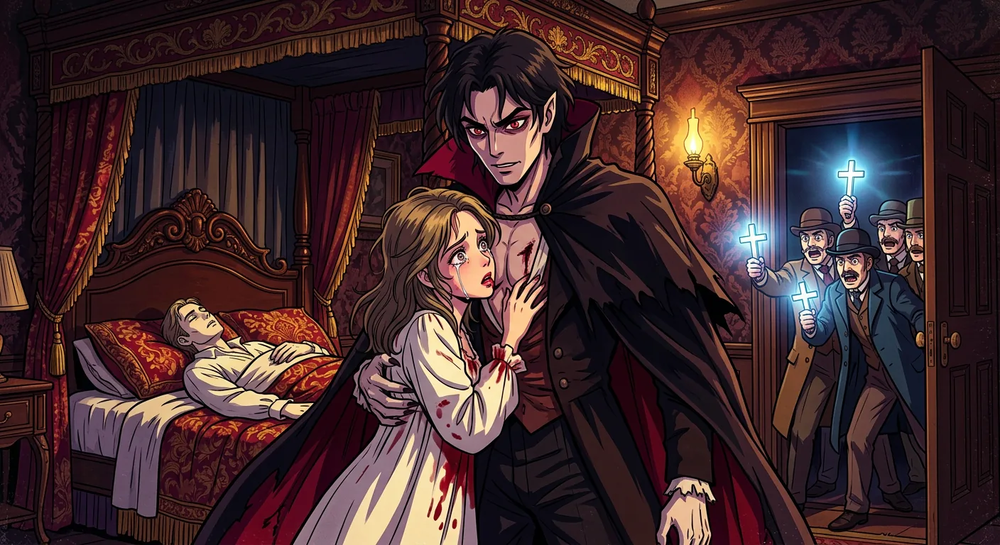
Renfield's Final Testimony
A man named Renfield was very sick and hurt. Before he closed his eyes for the last time, he told the doctors something important. He said the Count had visited him and made big promises. Renfield had let the Count inside, but then he was sorry. He tried to stop the Count from hurting others, but the Count was too strong.
The doctors rushed to check on Mina and Jonathan. They found the Count there in the dark room. Jonathan was sleeping deeply and could not wake up. The Count was being very mean to Mina. But brave Van Helsing held up a special holy object, and the Count had to back away. He turned into mist and slipped out under the door.
Poor Mina was so scared and sad. The Count had done something strange to her that worried everyone very much. Jonathan woke up looking tired and pale. Their friends promised to keep them safe and stop the Count for good.
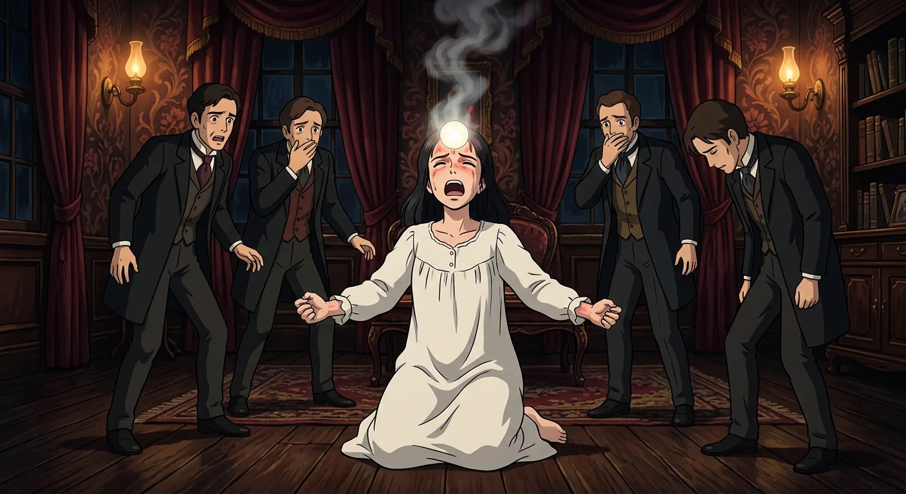
The Living Must Not Die
Jonathan writes in his diary to keep himself calm and brave. Something very sad happened the night before, and now the friends must work together while the sun is up. They learn that poor Renfield got badly hurt and passed away, which makes everyone feel sorrowful.
The friends decide that Mina should know everything now. She has been so brave, even though she is scared. The wise Professor Van Helsing tells her she must stay strong and keep hoping, no matter what. Mina promises she will try her very best, and her courage makes everyone feel braver too.
The group makes a plan to find all of the Count's hiding places in the city. They will go during the daytime when it is safer. Lord Godalming helps them get into a big house where they find boxes of dirt and important papers. Some friends go to look for more hiding spots while the others wait and watch. They are all working together to keep each other safe.
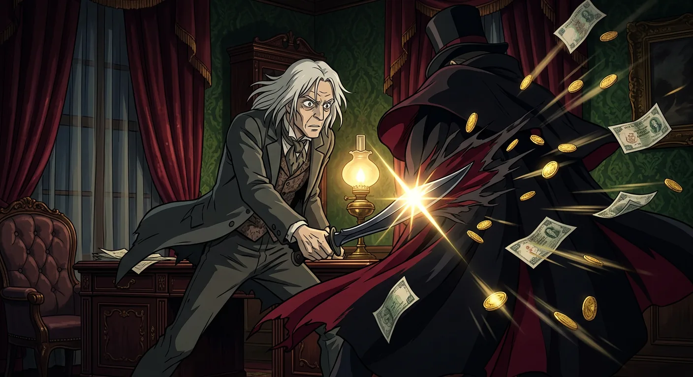
The Monster's Growing Mind
Jonathan Harker looked very different now. His hair had turned white, and his face looked tired and sad. He missed someone very much, and it showed. But he still had a spark inside him, a brave little light that kept him going.
Professor Van Helsing told everyone about the Count. Long ago, the Count had been a soldier and a leader. Now he was something strange and scary, but he was also getting weaker. The friends had been working hard to stop him, and they were almost done. The Count tried to get away, but the friends chased him off with special things that made him afraid. He jumped out a window and ran away into the night. He said mean things, but Van Helsing thought he sounded scared.
Later, Mina had a special idea. She could close her eyes and feel where the Count was going. She heard water splashing and chains rattling. The Count was on a boat, sailing far away. Now the friends knew they had to follow him and finish their important work together.
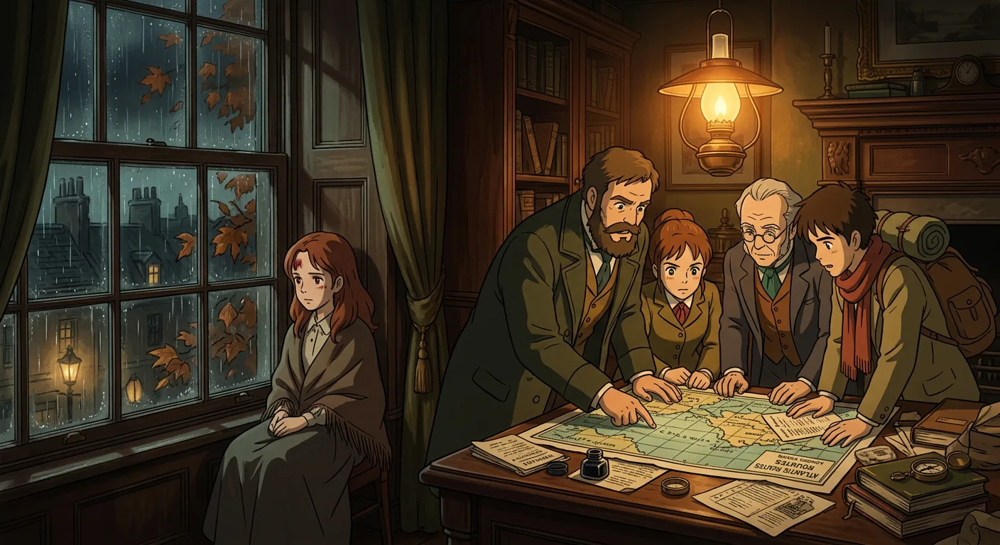
The Hunt Turns Toward Transylvania
The Count has left England! He is sailing away on a big ship, going back to his faraway home. Van Helsing tells everyone this is good news. They worked together and scared the Count away in just a few days. Now they must follow him and stop him for good.
Mina has been feeling poorly, and the Count has made her sick. But brave Mina wants to help her friends. She knows that sometimes the Count can see into her mind. So she asks everyone not to tell her their secret plans. That way, the Count cannot learn what they are doing. Mina will still travel with them because her friends can keep her safe.
The whole group gets ready for a big journey. They will take a train across many lands to catch up with the ship. Jonathan, Mina, Van Helsing, and all their good friends set off together, hoping to reach the Count before he gets home.
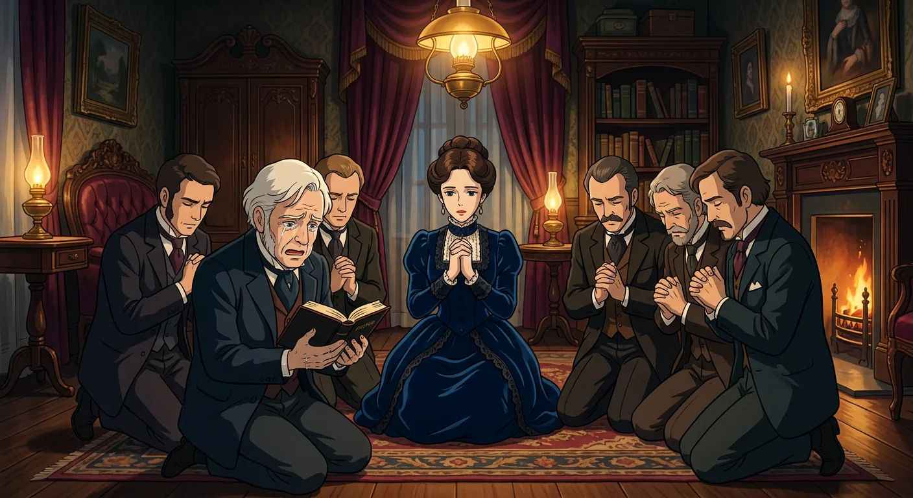
Mina's Solemn Oath of Sacrifice
Mina called everyone together because she had something important to say. She told her friends that something bad was happening to her because of the Count. She asked them all to make a promise. If she ever changed and became like the Count, they must help her find peace, just like they helped their friend Lucy. One by one, her friends knelt down and made this brave promise. Jonathan, her husband, looked very pale and worried, but he promised too because he loved her so much. Then Mina asked Jonathan to read some special, comforting words to her. He did, even though tears filled his eyes. Everyone felt a little better after that quiet moment together.
Soon the whole group took a long train ride to a faraway place called Varna. They were chasing the Count, who was traveling on a ship. Every morning and evening, Mina could somehow feel where the Count was. She told them about hearing water and waves. But then they got surprising news. The ship had gone to a different city called Galatz instead! The Count had tricked them. But clever Mina stayed hopeful and helped figure out what to do next. Now the friends were ready to chase the Count all the way back to his castle.
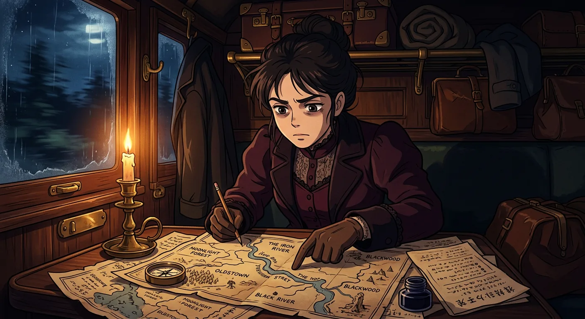
The Race to Galatz
Our group of friends took a train to a place called Galatz. They were chasing someone very tricky who was traveling by boat. Mina had a special gift that let her close her eyes and sense where the tricky man was going. But using this gift made her very tired, and it was getting harder each time.
When they arrived, everyone split up to search for clues. Jonathan and the others talked to a ship captain who told them about a strange journey with odd fogs and winds. Mina stayed behind and did something very clever. She looked at all the maps and papers and figured out which river the tricky man was using to get home. She is so smart and brave! Now the friends made a plan. Some would follow by boat, some would ride horses along the riverbank, and Van Helsing would travel with Mina through the mountains. Everyone was racing to catch up before it was too late.
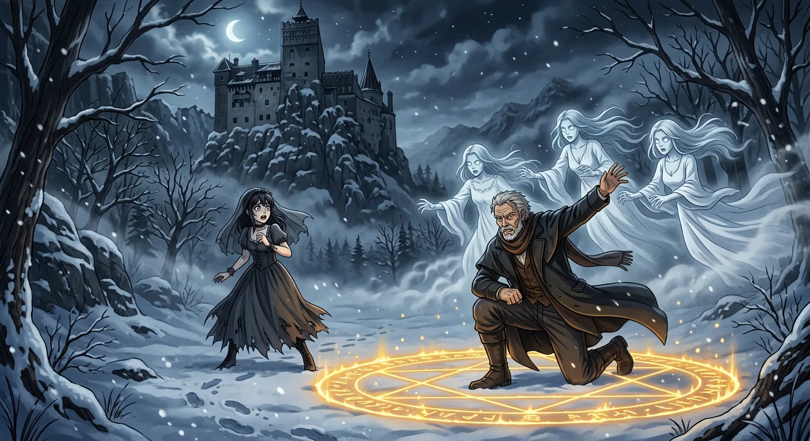
The Race to the Borgo Pass
Mina and Van Helsing travel through the beautiful, snowy mountains. The people they meet seem a little afraid of Mina. They give her food with too much garlic in it! So Mina wears a hat and veil to feel more comfortable. Van Helsing helps Mina rest, and she tells him their enemy is still far away on the river. As they get closer to an old castle, Mina feels very sleepy and tired. Van Helsing keeps her safe inside a special circle he makes. Some ghostly ladies appear in the snow and try to call Mina to them, but she stays brave and does not go.
Van Helsing goes into the castle to make sure the bad things there cannot hurt anyone ever again. Meanwhile, Jonathan and their friends race through the snow to help. They all work together, and just as the sun sets, they stop the Count forever. The curse is broken, and Mina is safe at last. Years later, Mina and Jonathan have a little boy named Quincey, named after their brave friends who helped them.